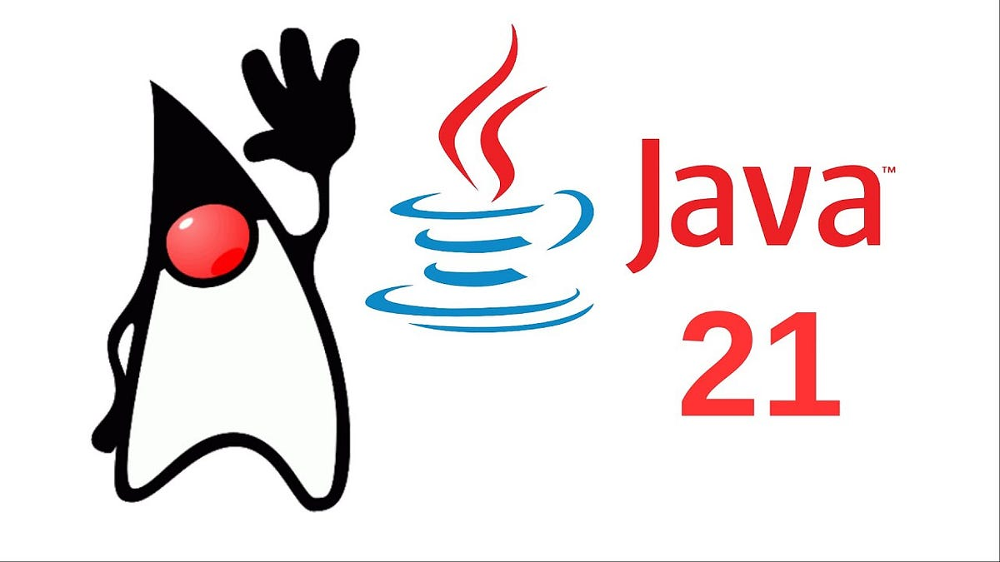

Notícias
O Java 21 virou o novo padrão!
Se você ainda está usando o Java 8 ou 11, o recado é claro: chegou a hora de atualizar! O Java 21 se consolidou como a versão LTS (suporte de longo prazo) mais utilizada no mundo. A grande novidade são as Virtual Threads, que permitem que o seu código processe milhares de tarefas ao mesmo tempo sem fritar a memória do seu computador. É mais performance com menos esforço!
Saiba mais: Notas de Lançamento do Java 21 (Oracle)

Spring Boot 3.x e a era Nativa
O framework favorito de quem trabalha com Java está cada vez mais rápido. Agora, com o suporte ao GraalVM, você pode transformar sua aplicação Java em um arquivo "nativo". O resultado? O site abre quase instantaneamente e consome uma fração da memória RAM de antigamente. Ótimo para quem quer economizar no servidor!
Fonte oficial: Anúncio do Spring Boot 3.0 (Spring.io)
IA Generativa agora fala Java fluente
Não é só de Python que vive a Inteligência Artificial! Grandes bibliotecas como o LangChain4j estão permitindo que desenvolvedores Java criem seus próprios "ChatBots" ou integrem modelos como o Gemini e GPT direto em sistemas corporativos. Se você achava que Java era só para banco e sistemas antigos, pense de novo: a linguagem está no centro da revolução da IA.
Referência técnica: IA Generativa para Java com LangChain4j (InfoQ)